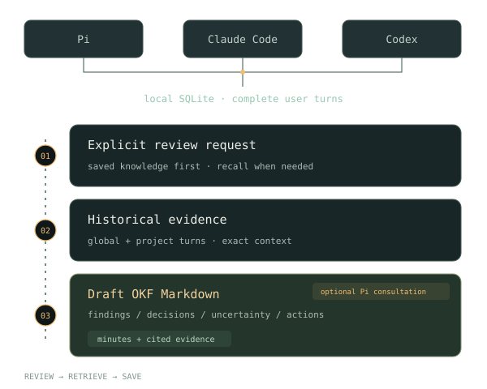

Explicit recall
Ask to review earlier work. Pi checks saved knowledge first, then searches indexed turns across all three sources.
Explore retrievalHistory in. Knowledge out.
Review your Pi, Claude Code, and Codex history. Route evidence through direct recall or multi-agent Discussion, verify the source, and save what you learned.
pi install npm:pi-session-memory
Version 1.0.0 · Install from npm.
Multi-agent evidence routing
1 MAIN + 3 HISTORY
Ask to review earlier work. Pi checks saved knowledge first, then searches indexed turns across all three sources.
Explore retrievalOrchestrate one main agent with up to three user-confirmed historical Pi agents. They answer privately and sequentially without changing source history.
Explore DiscussionSave cited findings, decisions, uncertainty, and actions as draft Open Knowledge Format (OKF) Markdown. Optionally use an Obsidian vault.
Explore saved knowledgeThe 1.0 multi-agent architecture
Discussion routes one recall request through user-confirmed historical agents. The current main agent keeps its tools and independently checks persisted source evidence.
Read ADR 0001recall_memoryone explicit historical-review requestDiscussion off. Ranked transcript excerpts return to the main agent.
User-confirmed agents answer privately and sequentially. They have no tools and never write to source sessions.
Multiple perspectives for interpretation. Persisted transcripts for verification.
The review workflow
Historical review starts only when you ask for it. Ordinary questions do not trigger transcript recall.
Read the retrieval contractInspect meeting descriptions. Reuse an existing OKF document when its description clearly matches.
Search global history and entity-matched project sessions. Expand exact turns when more context is needed.
Compare the retrieved evidence directly, or confirm historical Pi participants for optional private Discussion.
Write draft minutes and portable evidence. Keep uncertainty explicit. Participant agreement is not verification.
Get started
You need Pi and your local session files.
Read the setup guideUse the command above. Restart Pi or run /reload to load the extension.
Ask Pi: Set up pi-session-memory.
The guide explains one option at a time and saves only after your approval.
Ask Pi: Import my Pi, Claude Code, and Codex history.
You can also use the /pi-session-memory menu.
For example: Review our earlier work on offline eval and summarize the decisions and open questions.